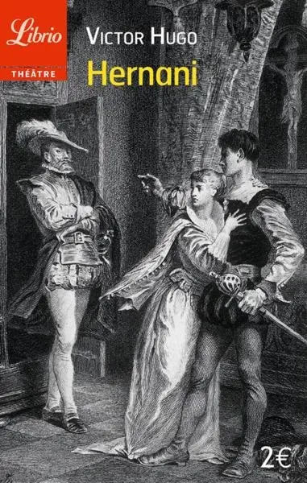
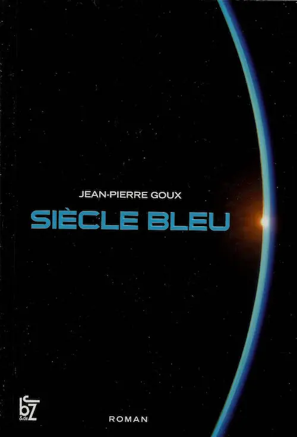
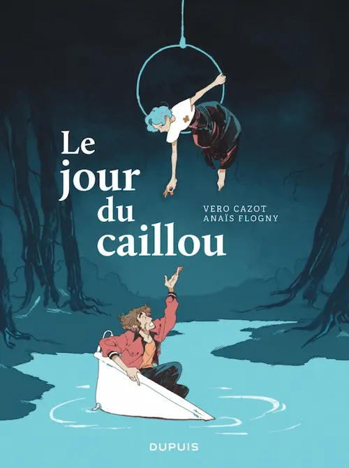
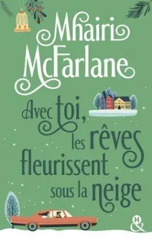
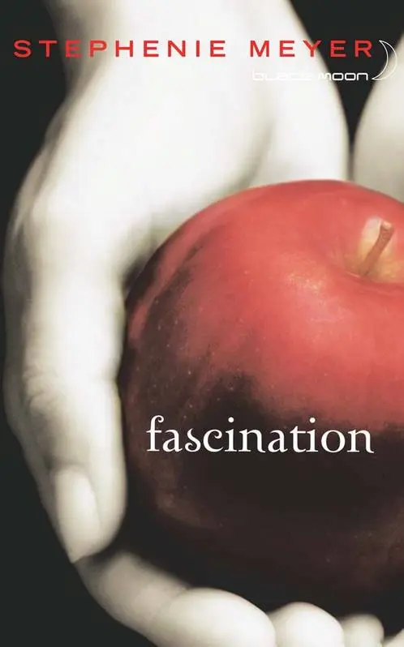
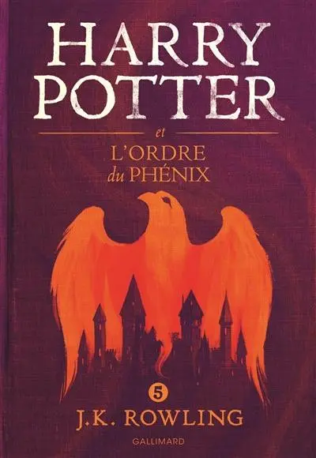
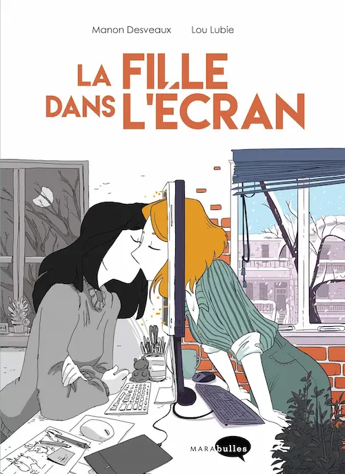
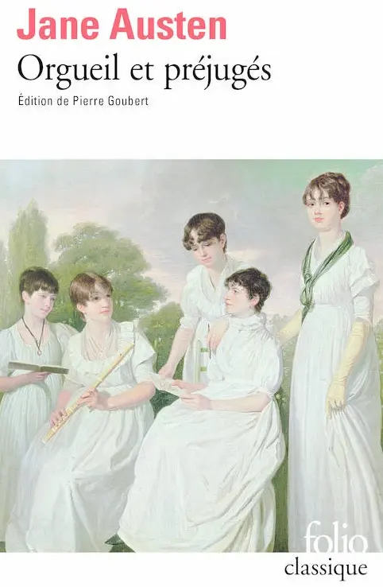
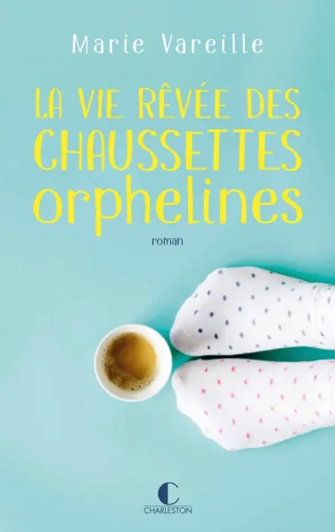

💖 Mes livres préférés
Comme pour les films et les séries, je me suis amusée à essayer de classer mes 10 livres préférés. Bien sûr, j’ai pioché dans mes lectures les plus récentes. Celles d’il y a quelques années ne figurant ni sur mon blog, ni dans ma « Bibliotek » personnelle, j’en ai forcément oubliées des tas.
Classer les 10 meilleurs livres dans un ordre précis relève du défi insurmontable. Je ne sais pas vraiment sur quels critères me baser. Se concentrer sur le nombre de fois où je les ai relus serait injuste, car il y a des pépites que je n’ai parcourues qu’une seule fois, alors que j’ai lu Harry Potter de bien trop nombreuses fois. Alors j’y suis simplement allée au « ressenti » : qu’est-ce que les 10 meilleurs livres, classés parmi mes meilleures lectures, me font ressentir à ce moment précis où je redécouvre leur couverture et où je dois choisir ?
10. Hernani de Victor Hugo
Résumé

Dans l’Espagne du début du XVIe siècle, Hernani est animé par le désir de venger la mort de son père, tué par le Roi, et son amour pour Doña Sol, que ce même Roi convoite également.
Mon avis
Comme je le disais dans mon article sur Hernani, cette pièce de Victor Hugo est un pur chef d’œuvre. Comme j’avais pris du plaisir à la lire, parfois à voix haute, et à ressentir ses sonorités et ses vibrations romantiques ! Bien que l’histoire puisse paraître compliquée à certains moments, surtout d’un point de vue politique, elle nous transporte et incarne la tragédie à la perfection. Je ne pouvais pas omettre cette pièce magnifique dans ce classement.
9. Siècle bleu de Jean-Pierre Goux
Résumé

L’organisation clandestine Gaïa est prête à tout pour sauver la planète et l’humanité. Ses membres multiplient les opérations spectaculaires et inquiètent les gouvernements des grandes puissances.
Mon avis
Là aussi, j’avais écris un article détaillé sur cette pépite. Excellente découverte où se mêlent habilement les sujets réels sur l’écologie et la fiction d’un groupe de soit-disant « éco-terroristes ». Excellente saga à redécouvrir.
8. Le jour du caillou de Véro Cazot et Anaïs Flogny
Résumé

Mona ne digère pas le départ d’Eko, son meilleur ami. Pour oublier sa peine, elle essaie d’imaginer qu’elle est concentrée dans un caillou, coincé dans sa chaussure, et que dès qu’elle le balancera, tout aura disparu.
Mon avis
Magnifique bande dessinée, très dynamique qui m’a encouragée à lire plus de volumes de ce genre. Le dessin, l’histoire, les personnages, l’humour, tout y est pour nous transporter et nous emballer.
7. Avec toi les rêves fleurissent sous la neige de Mhairi McFarlane
Résumé

Quatre amis inséparables passent de bons moments ensemble. Après la mort de l’une d’entre eux, l’apparition de son frère vient chambouler davantage ceux qui restent.
Mon avis
Oh, j’avais tellement aimé ce roman un peu bizarre qui semblait sortir de nulle part. En fin de compte, c’est un peu un poney de Noël, teinté de beaucoup de drame quand-même. Dans mon article, à l’époque, je l’avais qualifié d’excellent, et je me dis souvent que je le relierai bien… Si seulement il n’y avait pas tant de nouveautés à découvrir !
6. Fascination de Stephenie Meyer
Résumé

Bella vient vivre chez son père à Forks et découvre qu’un clan de vampires s’est installé là. Elle tombe sous le charme d’Edward et finit par mettre sa vie en danger pour rester auprès de lui.
Mon avis
Celui-ci semble un peu cliché. Je l’ai lu il y a bien longtemps, et redécouvert de nombreuses fois. D’ailleurs, ce n’est pas que le tome 1 qui trône ici, c’est toute la saga, Midnight Sun compris. Mais voilà, Twilight, c’est un gros coup de cœur. On ne peut rien y faire. Les films et les livres se sont suffisamment entremêlés pour que le tout forme un amas de bonheur et de bien-être. C’est cool, voilà tout 🙃.
5. Harry Potter et l’Ordre du Phénix de J.K. Rowling
Résumé

Harry a plus que jamais conscience du danger qui le guette et qui menace le monde des sorciers, mais aussi celui des Moldus. Voldemort est de retour et le Bien, comme le Mal, s’organisent pour l’affrontement.
Mon avis
Ici aussi ce n’est pas juste ce tome 5 de la saga qui compte, mais tous les tomes. Harry Potter n’est peut-être pas la meilleure histoire de tous les temps, le style de l’autrice n’est peut-être pas exceptionnel et il y a peut-être de nombreux détails douteux chez certains personnages censés être gentils… Pour autant, c’est un univers qui s’est ouvert à moi lorsque j’avais 11 ans. J’ai imaginé faire partie de ce monde et j’ai relu, encore et encore, les aventures de nos héros, car ils m’emmenaient chaque fois avec eux. Harry Potter c’est la nostalgie, la magie, le voyage.
4. La fille dans l’écran de Lou Lubie et Manon Desveaux
Résumé

Coline vit en France, Marley au Canada. Elles se rencontrent sur internet et communiquent par mails. Elles finissent par jouer un rôle décisif dans la vie l’une de l’autre.
Mon avis
Encore une merveilleuse BD sur la vie de deux femmes qui ne semblaient pas destinées à se rencontrer et à s’aimer. Jolie histoire, jolis dessins et beaucoup d’humour, j’adore ! C’est cette BD qui m’a remis les pieds dans ce format et je dois dire que c’était une excellente idée. Alors elle garde une place importante dans mon cœur, qu’elle a su titiller durant ma lecture.
3. Brume de Jérôme Pélissier et Carine Hinder
Résumé

Brume rêve de devenir une sorcière aussi puissante que la légendaire Naïa. Elle embarque son ami Hugo et son cochon Hubert à l’aventure pour faire ses preuves.
Mon avis
Je l’ai découverte et lue il y a peu. C’est une excellente série de bandes dessinées attendrissante et très intrigante. J’en ai parlé dans mon dernier article de lectures. J’attends la suite avec impatience pour découvrir tous les secrets du petit cochon qui est assez malin pour réaliser des potions magiques 🤔.
2. Orgueil et préjugés de Jane Austen
Résumé

Tout le monde connaît l’histoire d’Elizabeth Bennet et de Monsieur Darcy, inutile de s’étendre davantage 😉.
Mon avis
Il est clair et sans appel, ce livre est un pur chef d’œuvre classique. J’aime beaucoup ce roman, critique d’une société coincée dans les conventions sociales. C’est avec ce genre de littérature que l’on fait bouger les mœurs. Certes, pas toujours quand on le souhaiterait, mais ce type de manifeste marque les esprits.
1. La vie rêvée des chaussettes orphelines de Marie Vareille
Résumé

Alice tente de mener sa nouvelle vie en laissant derrière elle les traumatismes et les mensonges du passé. Mais ses barrières seront-elles efficaces face à tant de changement ?
Mon avis
J’en avais déjà longuement parlé dans mon article dédié à ce roman, il est excellent. Une pure merveille.
C’est ce livre qui m’a fait (re)découvrir Marie Vareille et ses autres romans m’ont également transportée. Il n’y en a pas un meilleur que les autres, mais comme celui-ci a fini de me convaincre de l’immense talent de l’autrice, il mérite largement la première place de ce podium. Je considère néanmoins Le syndrome du spaghetti, La dernière allumette et Ainsi gèlent les bulles de savon comme faisant partie du même lot, ils se serrent un peu sur la marche pour laisser une chance à d’autres chefs d’œuvres 😁.
Voili voilou pour mon top 10 de lectures ! Enfin, pour le moment… Eh oui, je n’ai même pas parlé d’Abyss, d’Orson Scott Card, pourtant Dieu sait que c’est un roman épatant.